12. EmployeesEmployee records, photos, documents, salary and bank details
13. PayrollMonthly payroll run, posting, payslips, statutory forms
14. AdministrationAdmin Centre, users, roles, activity log, settings
15. Backup and restoreEncrypted backups, daily backups, restoring
16. Quick referenceA typical month, several PCs, what is not covered yet
The everyday flow in one line
Set up company→Customers & vendors→Invoice / Bill→Post→Payment→Reconcile bank→Reports→Lock the month
Draft → Posted → Paid / Void. Invoices, bills and expenses are saved as drafts first, and you can still change them. Posting writes them into the ledger. Posted records are never deleted. A mistake is corrected by voiding, which adds a reversing entry, so the history is always complete.
1Getting started
Install
Run the installer Cenango Accounting_0.1.0_x64-setup.exe. It installs for the current Windows user, so it needs no administrator rights, and adds a Start-menu shortcut. Your data is kept in %LOCALAPPDATA%\CenangoAccounting. Installing an update or uninstalling never touches that folder.
Create the administrator (first start only)
On a new installation the app has no users yet, so it asks you to create the first one: the administrator, who can do everything.
Choose a Username.
Enter a Password of at least 8 characters, and type it again to confirm.
Click Create administrator.
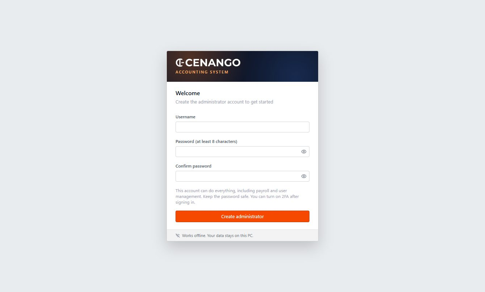
First start: create the administrator account.
This screen appears only once, on the PC itself. After the first account exists, everyone signs in normally.
Set up your company — step by step
Next the app asks for your company details, one question per page. These details print on your invoices and statements, and they set your currency and financial year.
Step
What it asks
1 – 5
Company name, address, email, phone, website
6
Country. Choosing it fills in the currency, number format and financial-year start; you can change any of them.
7 – 10
Tax / VAT / GST number, logo, how customers pay you (bank details), a note at the bottom of invoices
11
Review: every answer on one page. Click a row to change it, then Finish.
Next saves the answer and moves on. Skip leaves it empty. Back returns to the previous page.
Set up later (top right) goes straight into the app. It asks again at the next sign-in, until the company name is entered.
To open the wizard again later, go to Settings → Setup wizard. The Company and Region & currency tabs of Settings have the same fields.
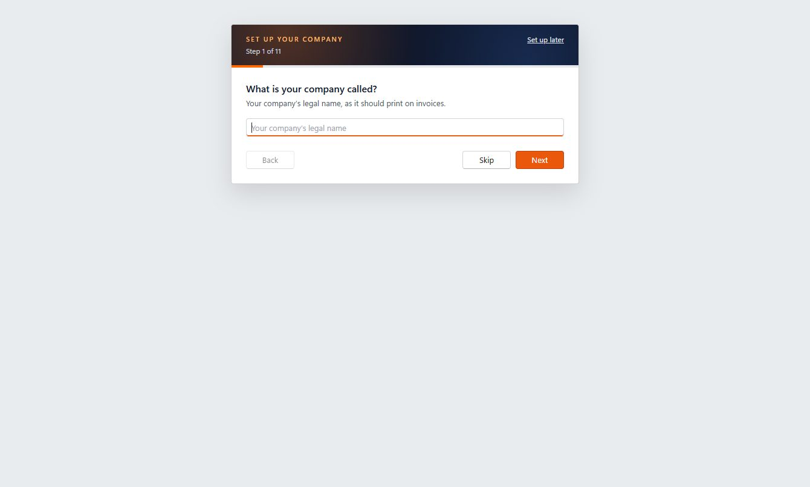
One question per page: Back, Skip, Next.
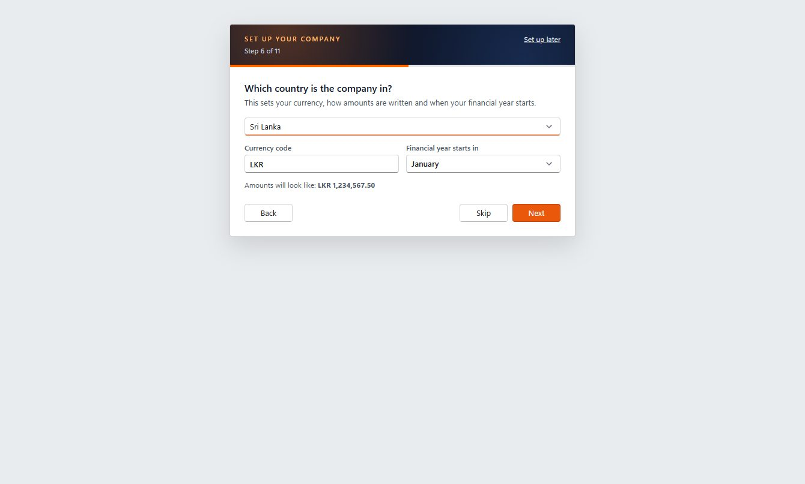
The country sets the currency and financial year.
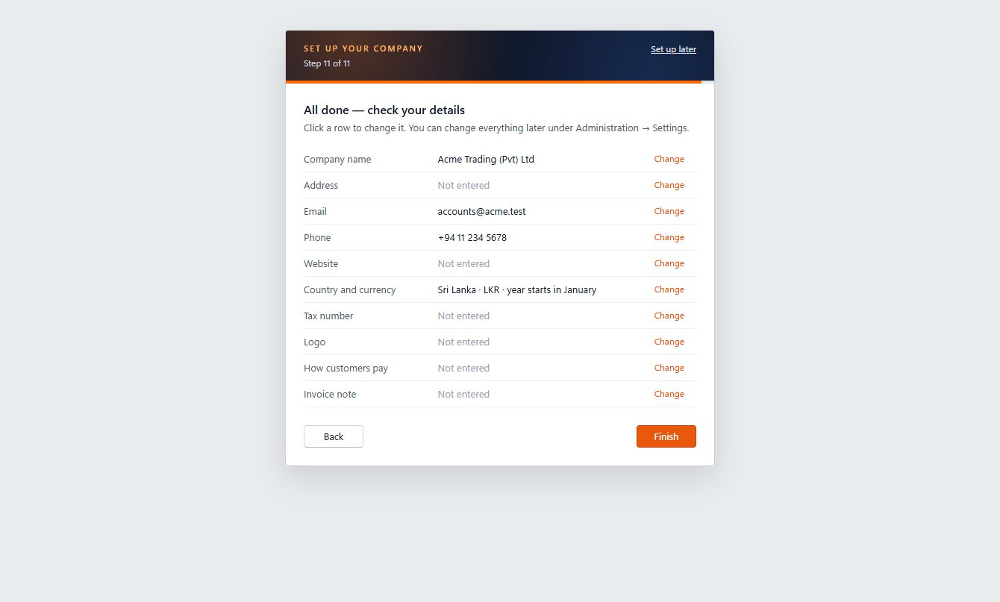
The last page: check everything, click a row to change it, then Finish.
Sign in
Each person signs in with their own username and password. After several wrong passwords the account is paused for a short time, and the screen says why.
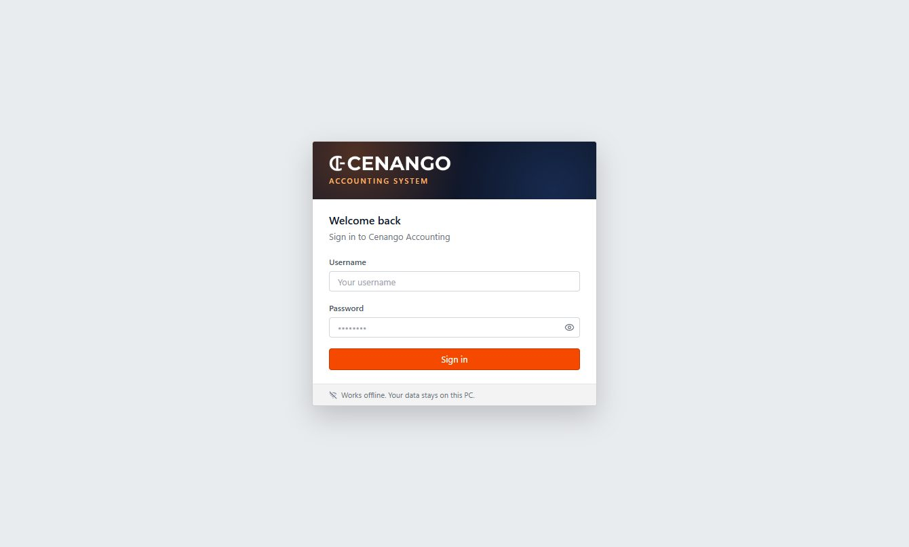
The sign-in screen.
Two-factor sign-in (2FA) — recommended
Each user can add a second step to their sign-in: a 6-digit code from an authenticator app, such as Google Authenticator or Microsoft Authenticator, on their phone.
Choose Turn on 2FA from the top bar.
Scan the QR code with the phone app, or type in the key shown under it.
Enter the 6-digit code from the app and click Activate 2FA & Sign in.
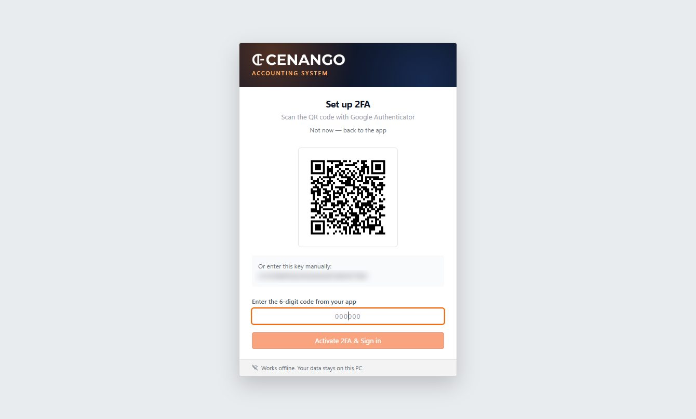
Turning on two-factor sign-in. (The key is blurred in this guide.)
If someone loses their phone, an administrator can use Reset 2FA on the Users page.
2The app window
The app works like a normal Windows program: a menu bar, a toolbar, a navigation pane on the left and a status bar at the bottom.
The main window.
Part
What it does
Menu bar File · Edit · View · Lists · People · Transactions · Accounting · Reports · Admin · Help
Every screen and command, with its keyboard shortcut shown next to it.
Toolbar
One click to the common tasks: Back / Forward / Home, new Invoice, Bill, Expense or Payment, the Customers, Vendors and Employees lists, Reports, and Refresh, Print and Export.
Navigation pane
Every screen, grouped: Master Data, People, Transactions, Accounting, Reports and Administration. Hide or show it with Ctrl+B.
Status bar
Where you are, who is signed in, the connection status and today's date.
Keyboard shortcuts
Keys
Action
Keys
Action
Ctrl+N
New record on this screen
F5
Refresh this screen
Ctrl+S
Save the open form
Esc
Close the form
Ctrl+F
Jump to the search box
Alt+← / →
Back / Forward
Ctrl+P
Print this screen
Ctrl+B
Hide / show the navigation pane
Ctrl+E
Export the tables to Excel (CSV)
F1
Show all shortcuts
If you leave a form you have changed without saving it, the app asks before your changes are thrown away.
3Dashboard
The first screen after signing in shows how the financial year is going.
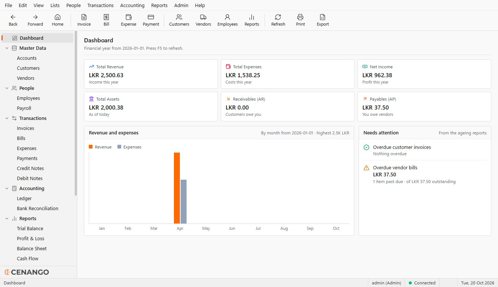
Dashboard: year-to-date totals, revenue against expenses by month, and what needs attention.
Six cards: Total Revenue, Total Expenses, Net Income (profit), Total Assets, Receivables (what customers owe you) and Payables (what you owe vendors).
Revenue and expenses by month for the financial year.
Needs attention: overdue customer invoices and overdue vendor bills, taken from the ageing reports.
Press F5 to refresh the figures.
4Setting up your books
Chart of accounts
Master Data → Accounts. A new installation starts with a ready-made chart of accounts: cash, receivables, payables, revenue, expenses, equity and the payroll accounts. Add your own accounts with + New Account, for example a separate bank account or an expense category. An account can be deleted only while nothing has been posted to it.
Edit changes an account's code, name or subtype at any time. Its type and currency are fixed once something has been posted to it, so past reports never change.
Currency: an account, such as a USD bank account, can be kept in a foreign currency (chapter 9).
Add a separate payable account, for example Telephone & Internet Payable, to see what you owe for it on its own line of the Balance Sheet (chapter 7).
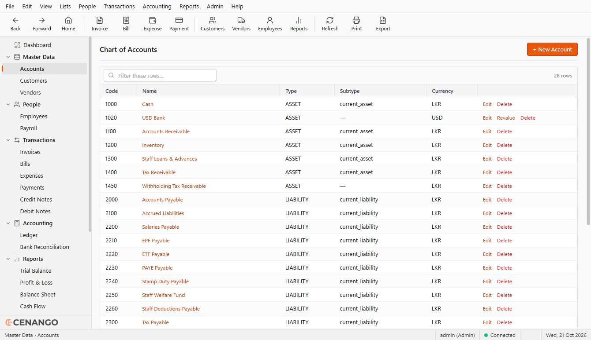
The chart of accounts with a USD bank account and a renamed payable. Type in the filter box to find an account.
Customers and vendors
Master Data → Customers and Vendors hold the people you sell to and buy from: name, contact details and address. Choosing a customer on an invoice fills in the Bill To details. Each customer also has a Statement link (see chapter 11).
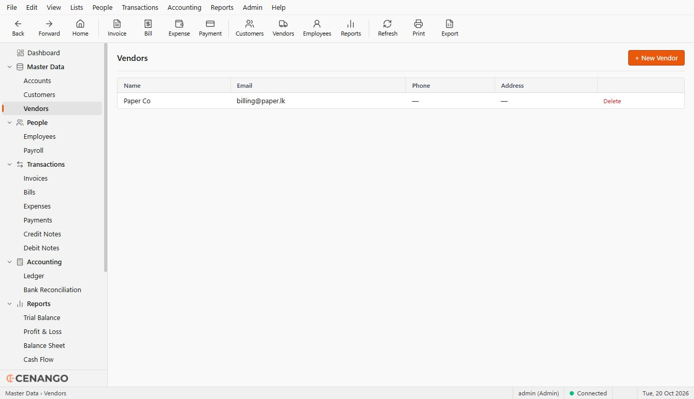
The Vendors list.
Taxes (VAT / GST / sales tax)
Admin → Taxes. Create one tax code for each rate you charge or pay.
Standard: one rate, for example VAT 18%. Choose the account the tax on sales is posted to (tax payable), and the account the tax on purchases is posted to (tax receivable).
Group: several taxes on one line, for example a national tax plus a local tax, including a tax charged on top of another tax.
Withholding: tax a customer keeps back from a payment and pays to the tax office for you.
Defaults: the tax code that new sales lines and new purchase lines start with. Each line can still be changed.
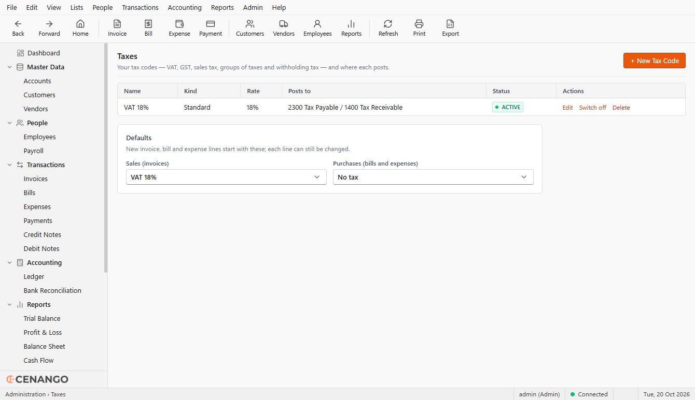
Tax codes and the defaults for new lines.
If your company is not registered for tax, leave this screen empty. Invoices then show no tax.
5Selling: invoices
Transactions → Invoices, or the Invoice button on the toolbar.
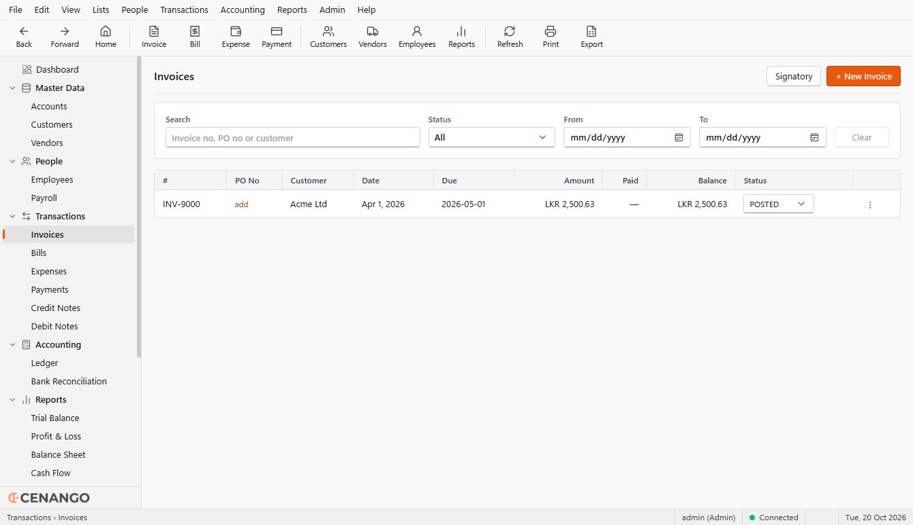
The invoice list. Search by invoice number, PO number or customer, and filter by status or date.
Create an invoice
Click + New Invoice. The invoice opens exactly as it will print.
On the left (Bookkeeping, not printed): choose the customer, the payment terms (these set the due date), the revenue account and tax code for each line, and the currency.
On the invoice: check the Bill To details, then type each line's description, quantity and unit price. Totals, tax and the amount in words update as you type.
Click Save Invoice. It is saved as a draft, so you can still change it.
In the list, set its status to Posted. This puts it into the ledger: the customer's balance and your revenue go up.
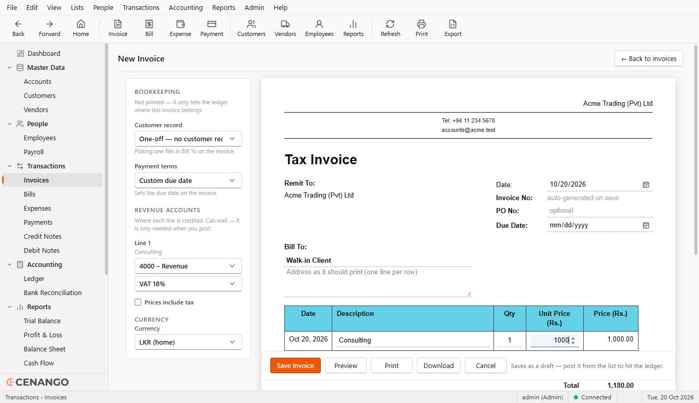
A new invoice. When a tax code is used, the title changes to “Tax Invoice”.
Preview, Print and Download produce the invoice as a PDF, with your logo, company details, payment instructions and the signatory's name and title.
Signatory on the list sets the name and title printed at the bottom of every invoice.
Prices include tax: tick this when the prices you type already include the tax.
6Getting paid: payments
Transactions → Payments. Record money received from customers (AR) and money paid to vendors (AP).
Click + Record Payment.
Choose AR — Customer Payment or AP — Vendor Payment, then the invoice or bill. The list shows what is still owed on each one. To pay off a payable account directly, without a bill (for example the monthly telephone payable), choose Payable account — pay a liability and pick the account.
Enter the date and amount, the method (bank transfer, cash, cheque…) and the account the money went into or came out of.
Click Record Payment. The invoice becomes Paid, or Partly paid if not all of it was paid.
Withholding tax
If the customer kept back some tax, choose the withholding tax code and enter the amount withheld. The app shows how the invoice is settled, for example “LKR 1,130.00 paid + LKR 50.00 withheld for the tax office”.
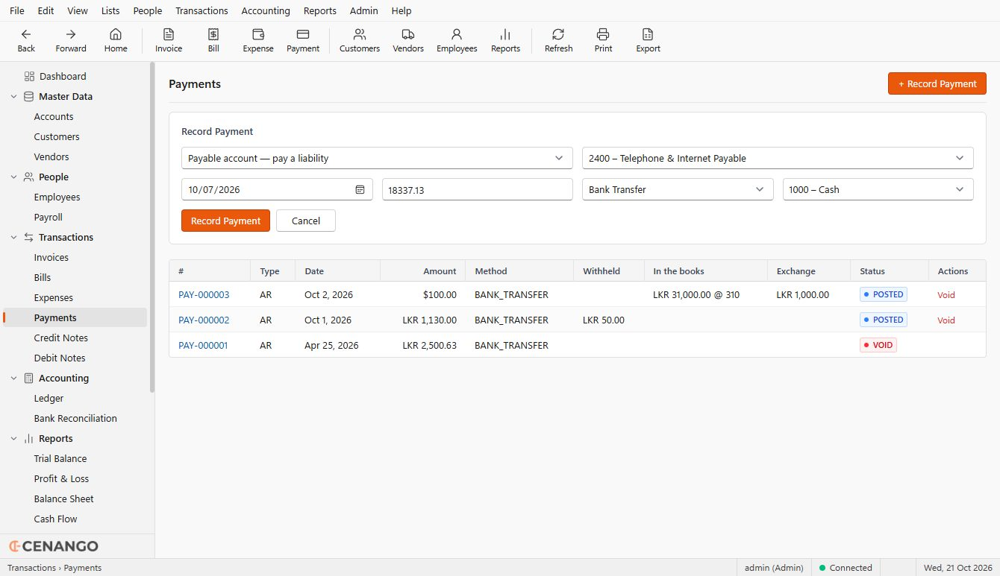
Paying LKR 18,337.13 off the Telephone & Internet Payable account.
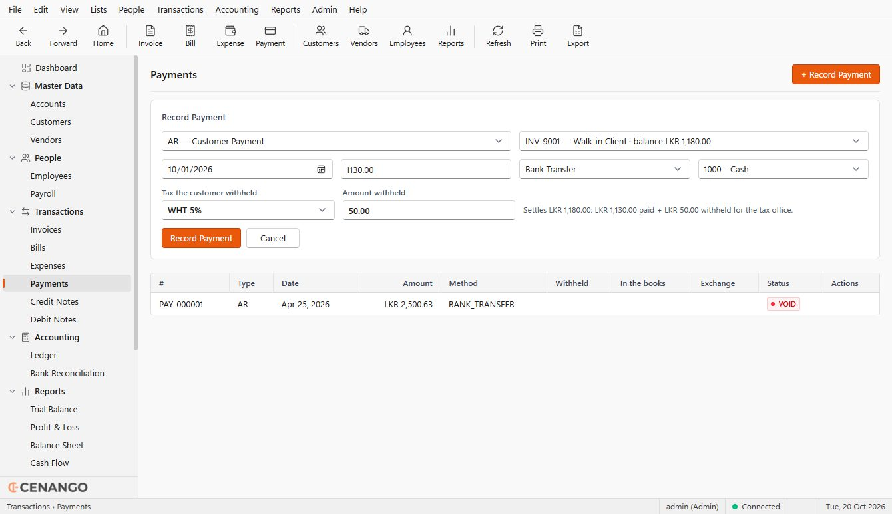
Recording a payment with tax withheld by the customer.
Void cancels a payment that was entered by mistake. The invoice is owed again, and the ledger keeps both the payment and its reversal.
7Buying: bills and expenses
Bills (from vendors)
Transactions → Bills, or the Bill button. Use a bill when a vendor sends you an invoice that you will pay later.
Click + New Bill, then choose the vendor and enter the date, due date and currency.
Add each line with its description, amount, expense account and tax code.
Owed on (payable account): leave it as Accounts Payable, or choose a separate payable such as Telephone & Internet Payable.
Save the bill, then post it. That payable goes up until you pay it on the Payments screen.
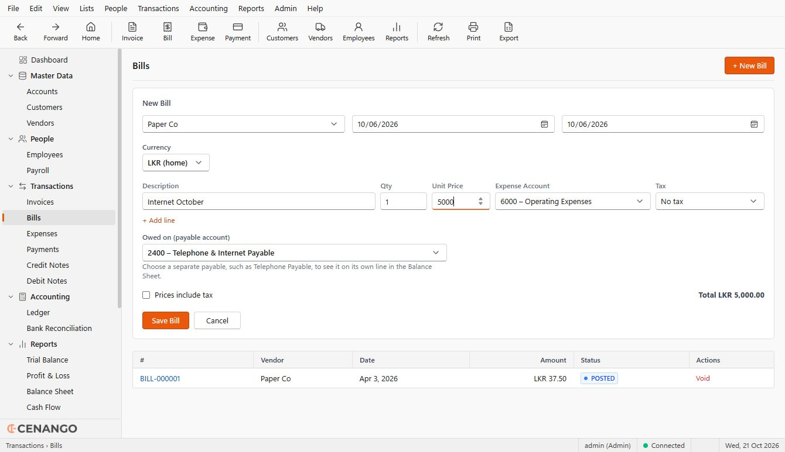
A new bill owed on the Telephone & Internet Payable account.
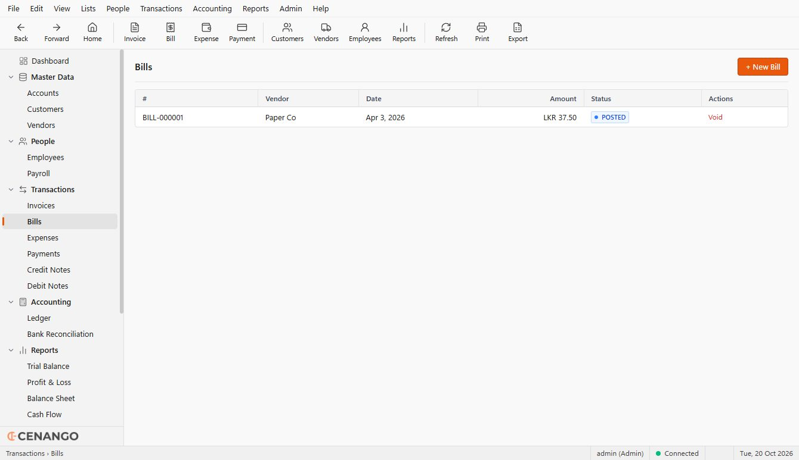
The bill list. A posted bill can be voided.
Expenses (paid straight away)
Transactions → Expenses, or the Expense button. Use this for costs paid on the spot, such as fuel, stationery or a utility bill: there is no vendor bill to keep track of. Click + New Expense, choose the expense account, the account you paid from and the tax code, then save and post.
8Credit and debit notes
For a discount, a return or an over-charge after an invoice or bill has been posted.
Credit Notes reduce what a customer owes on a posted invoice.
Debit Notes reduce what you owe a vendor on a posted bill.
Click + New Credit Note (or + New Debit Note).
Choose the invoice or bill, then enter the date, the reason, the amount and the account.
Save it. The balance owed goes down straight away, and the customer's statement shows the note.
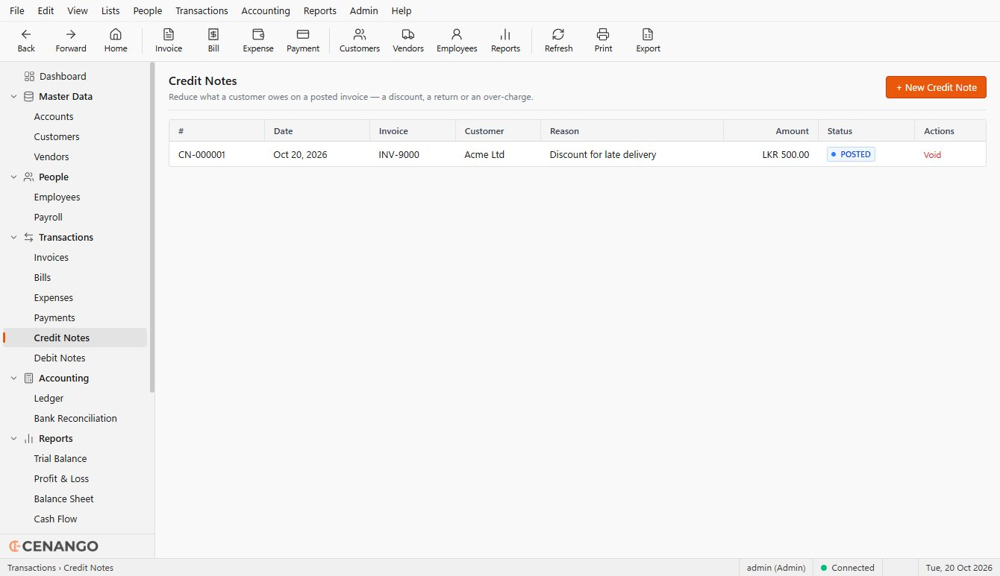
A credit note for a discount on invoice INV-9000.
A note can be voided, which puts the amount back.
9Foreign currency
Invoice an overseas customer in USD, or enter a bill from a European supplier in EUR. Your books stay in your own currency.
On the invoice or bill, set Currency to the foreign currency.
Enter the rate: “1 USD = how many LKR?”. The app suggests the last rate you used for that currency.
The invoice is written and printed in USD. In the books it is recorded in your own currency at that rate.
When the customer pays, enter the payment in USD at that day's rate.
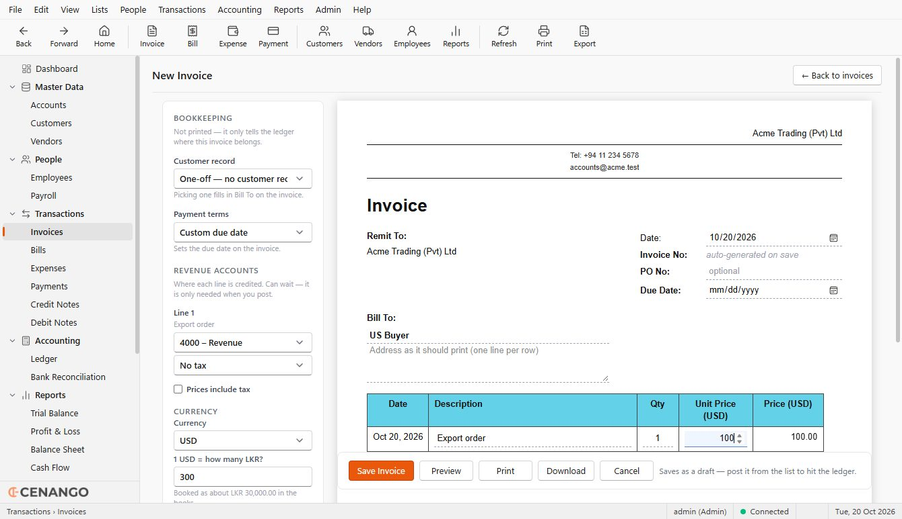
A USD invoice: prices in USD, “Booked as about LKR 30,000.00 in the books”.
If the rate has changed since the invoice, the difference is posted automatically to 7900 Foreign Exchange Gain/Loss. The Payments list shows each foreign payment in your own currency (In the books), together with the gain or loss (Exchange).
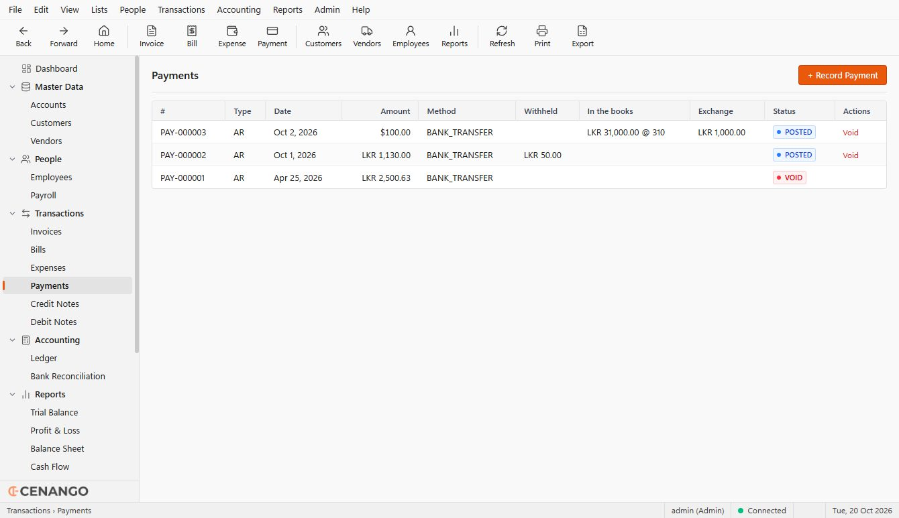
$100.00 received at 310 (booked at 300): LKR 31,000.00 in the books and an exchange gain of LKR 1,000.00.
Foreign-currency bank accounts
When you hold money in a foreign currency, for example a USD bank account, create the account with + New Account and set its Currency to USD.
Every entry on it is recorded twice: in USD, and in your own currency at the rate of the day. A journal entry line on a USD account asks for the amount in USD and the rate.
Payments into or out of it can only be for invoices or bills in the same currency.
Its activity page and its bank reconciliation show the USD balance, so it matches the bank statement.
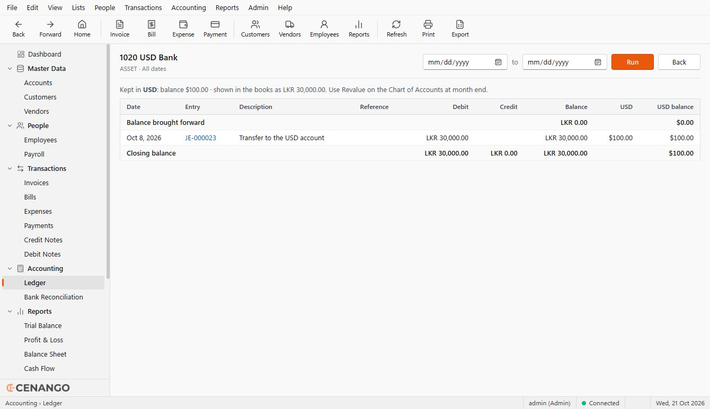
A USD bank account: $100.00, held in the books as LKR 30,000.00.
Month-end revaluation
Rates move, so at month-end click Revalue next to the account on the Chart of Accounts and enter the month-end rate. The app posts the difference to 7900 Foreign Exchange Gain/Loss, so the Balance Sheet shows the account at today's value. The USD balance does not change.
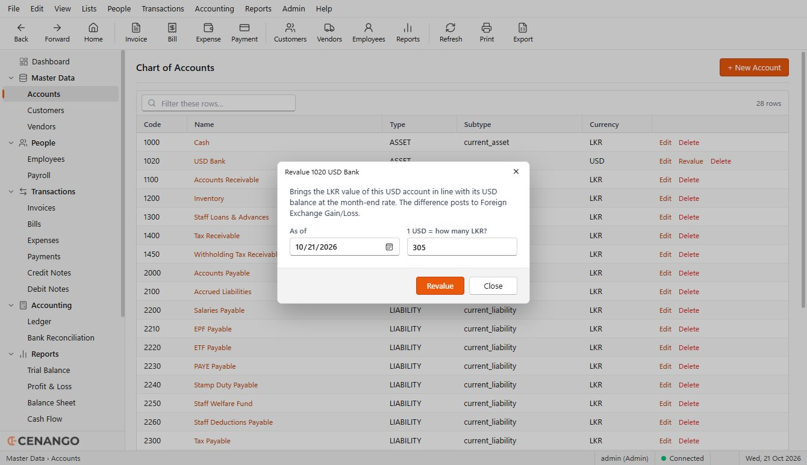
Revaluing the USD account at 305.
10Accounting
Ledger and journal entries
Accounting → Ledger lists every journal entry, whether it came from an invoice, bill, payment or payroll run, or was entered by hand.
Click + New Journal Entry for opening balances, bank charges, interest, depreciation or corrections:
Enter the date, a description and an optional reference.
Add one line per account, with the amount as a debit or a credit. + Add line adds more lines.
When the totals match, the form shows ✓ Balanced. Click Post Entry.
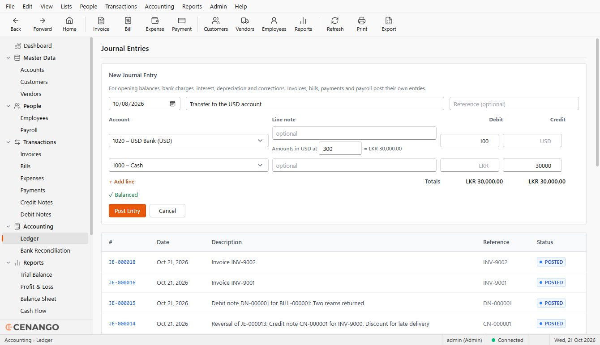
A journal entry moving LKR 30,000 into the USD account: $100 at 300.
Transaction details
Click any entry on the Ledger, or any document number on the Invoices, Bills, Payments, Expenses and Credit Notes lists, to open its transaction details: where it came from, its status and every ledger line. Click an account to see its activity. Reverse this entry corrects a manual entry by posting the opposite entry; posted entries are never deleted.
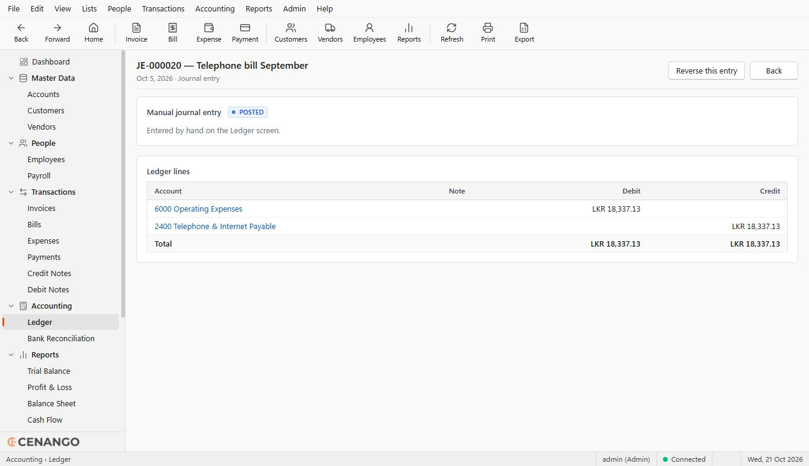
The details of a manual journal entry: the telephone bill for September.
Bank reconciliation
Accounting → Bank Reconciliation checks your books against the bank statement.
Choose the bank account, then enter the statement date and the closing balance printed on the statement.
Tick each deposit and payment that appears on the statement.
When Difference shows 0.00, click Finish. Or click Save for later and carry on another time.
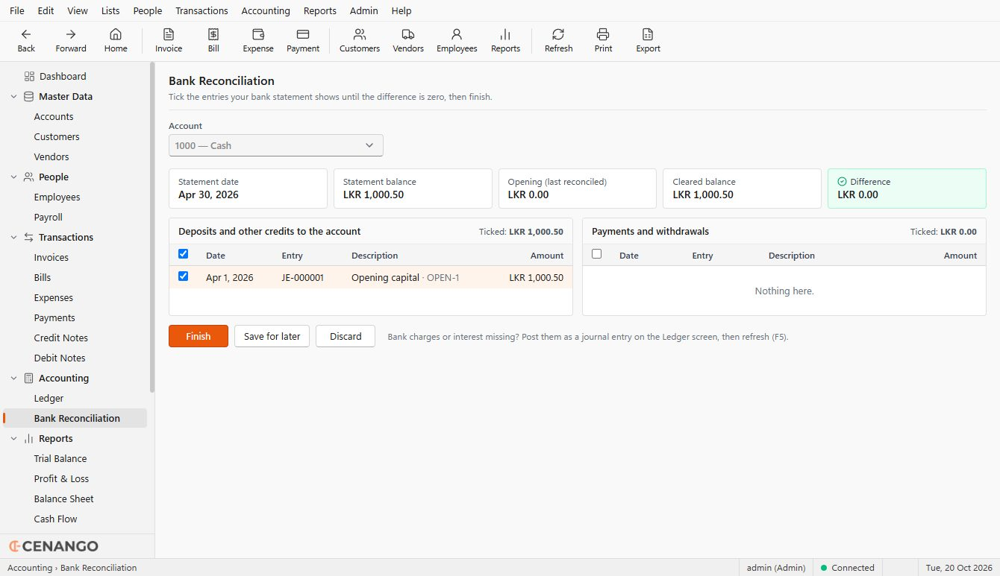
Reconciled: the difference is zero.
Bank charges or interest on the statement but not in the books? Post them as a journal entry on the Ledger screen, then press F5.
Lock the books
Once a month or year is closed, lock it under Settings → Closing. After that, nothing can be posted on or before the lock date: no invoices, bills, payments, expenses, payroll or journal entries. This protects figures that have already been reported. Mistakes found later are corrected with entries dated today.
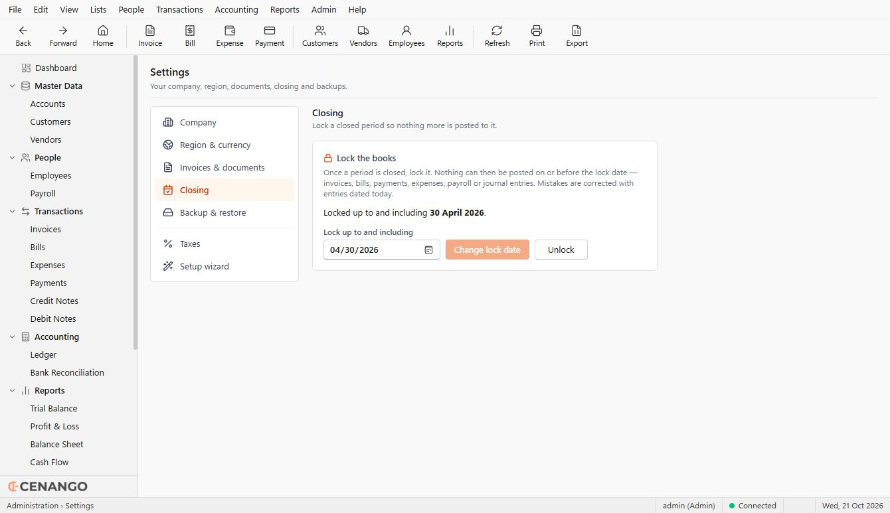
Settings → Closing: the books locked up to 30 April 2026.
11Reports
Every report works the same way: choose the dates, click Run, click any account to see its entries, press Ctrl+P to print or Ctrl+E to export to Excel.
Profit & Loss
Revenue, cost of goods sold and expenses for any period, ending with Net Income. Compare puts the same period last year (or the previous period) beside it, with the change.
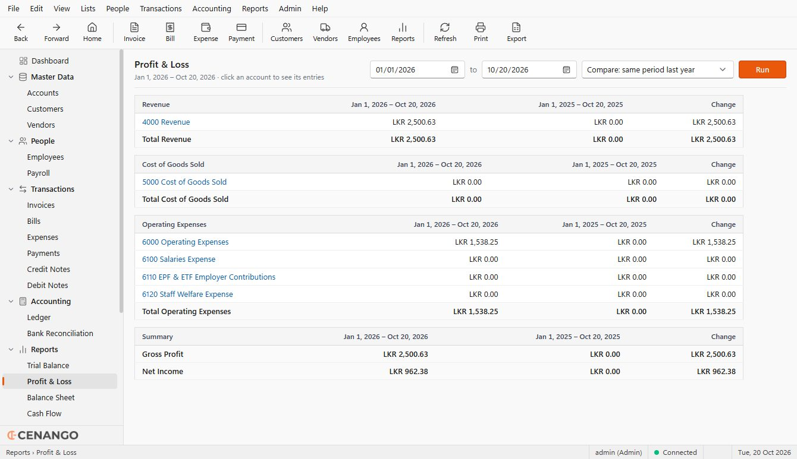
Profit & Loss compared with the same period last year.
Balance Sheet
What the company owns (assets) and owes (liabilities), plus equity, on any date. The current year's profit shows as Retained Earnings, and a check confirms the sheet balances.
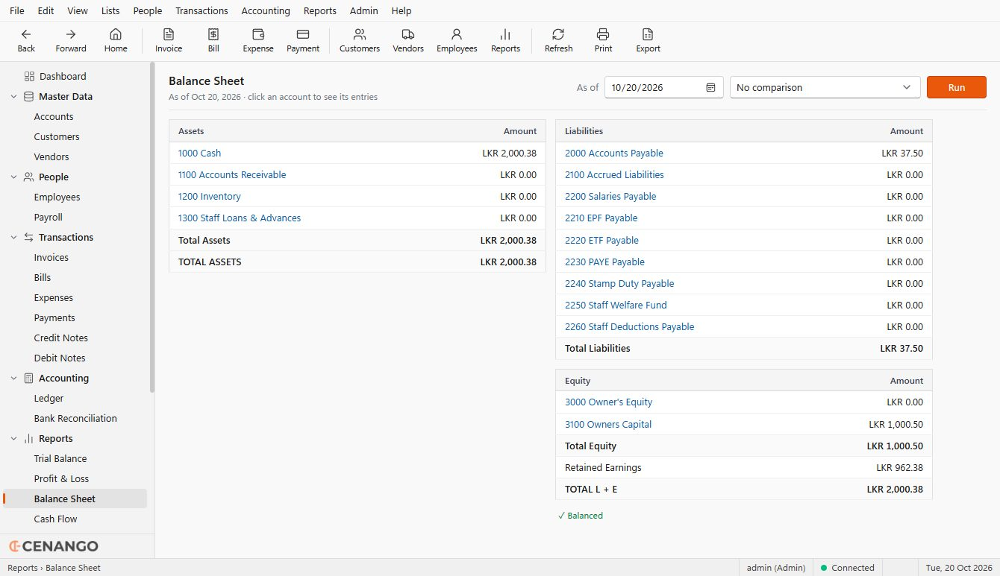
Balance Sheet — “✓ Balanced”.
Cash Flow
Where the cash came from and went to: operating, investing and financing activities, from the opening to the closing cash balance. Tick the accounts that count as cash and bank.
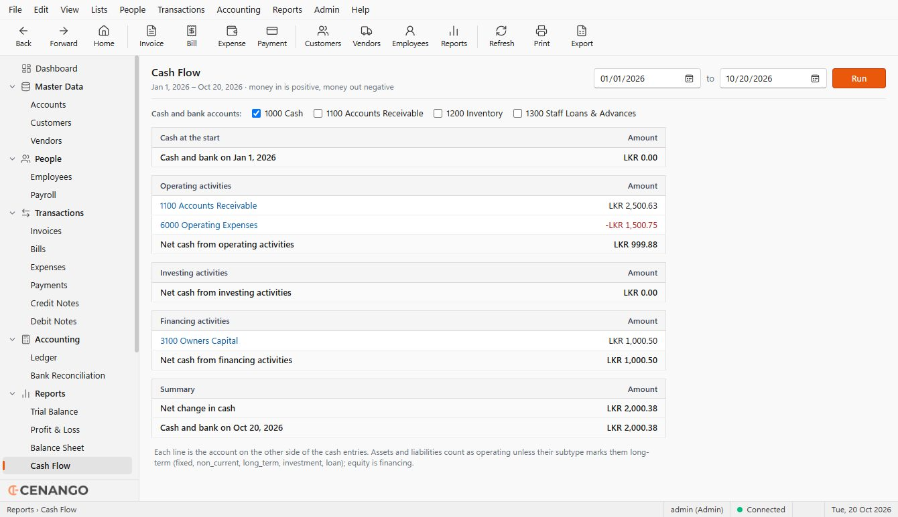
Cash Flow statement.
Trial Balance
Every account's debit or credit balance. Total debits always equal total credits.
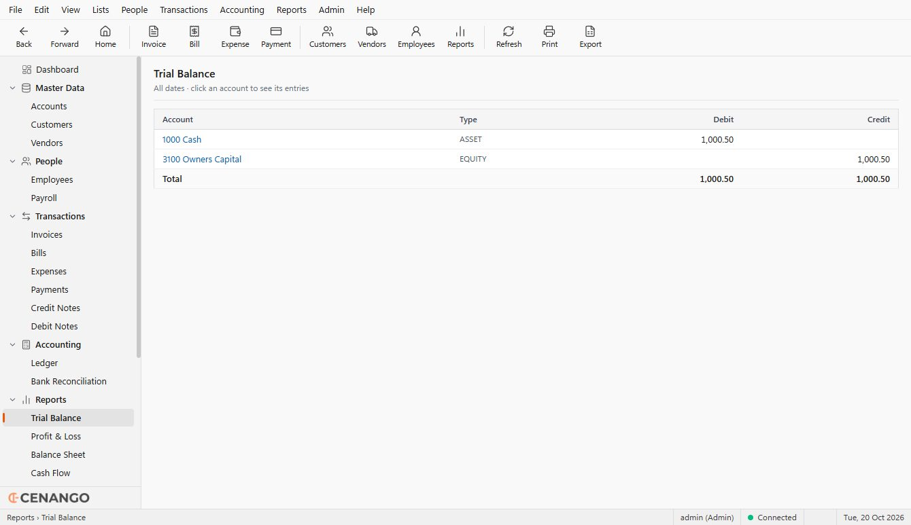
Trial Balance.
AR and AP ageing
Who owes you, and whom you owe, grouped by how late the payment is: Current, 1–30, 31–60, 61–90 and 90+ days.
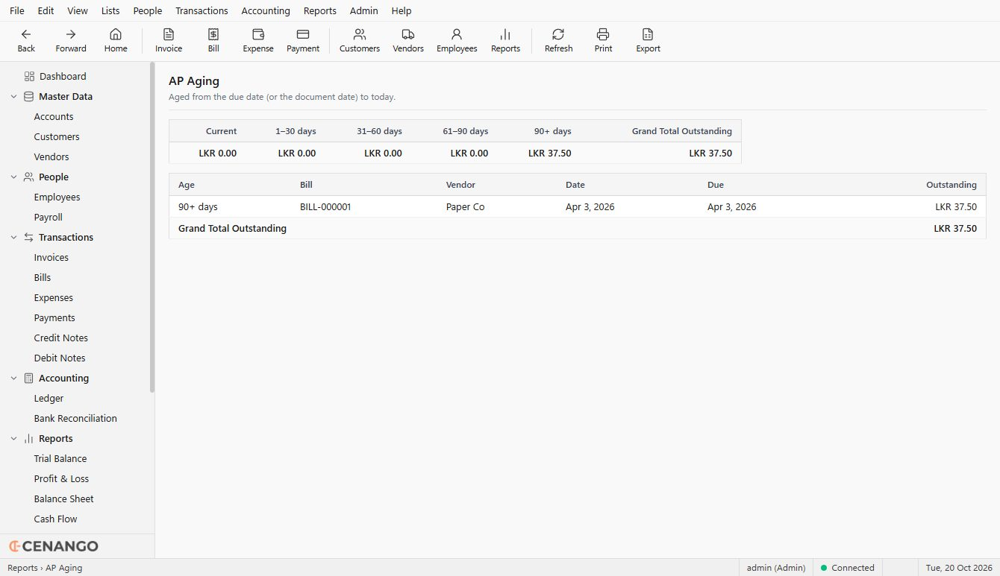
AP ageing: one bill is more than 90 days overdue.
Account activity (drill-down)
Click any account in a report to see every entry behind its figure, with a running balance.
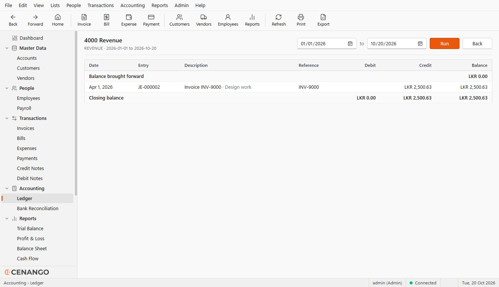
The entries behind 4000 Revenue.
Customer statement
On the Customers list, click Statement to list a customer's invoices, payments and credits for a period, with the amount due. Use Print / PDF to send it to them.
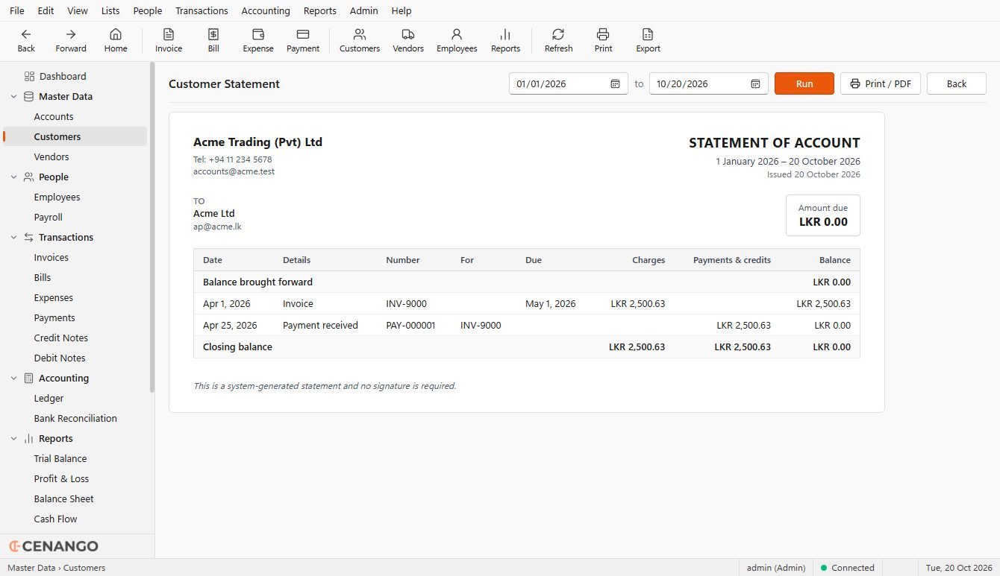
Statement of account, ready to print or save as PDF.
Tax return
For any period: sales and purchases per tax code, tax charged on sales, tax paid on purchases, and the tax to pay. Use it to fill in your country's return form.
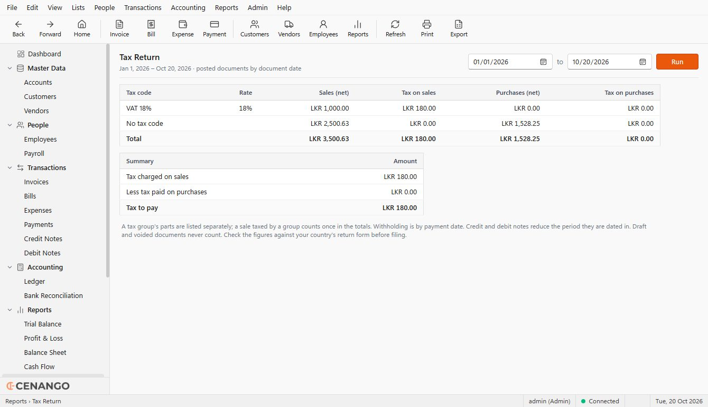
Tax return summary.
12Employees
People → Employees: one record per person.
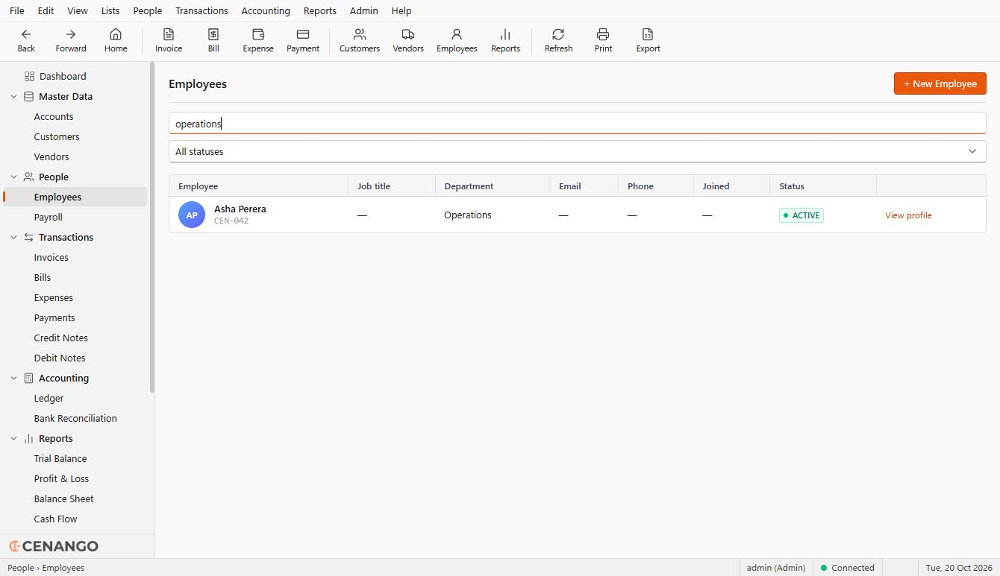
The employee list.
Profile: personal and job details, ID numbers and a photo. Photos and documents are stored encrypted on the PC.
Salary:+ Set salary records the starting salary with its parts (basic pay and allowances). + Add increment records a raise with its effective date. The history is kept.
Bank details for salary transfers, and the employee's staff loan balance.
Documents:+ Upload document stores contracts, certificates, IDs and similar files, with a category and an optional expiry date. Payslips are filed here automatically by payroll.
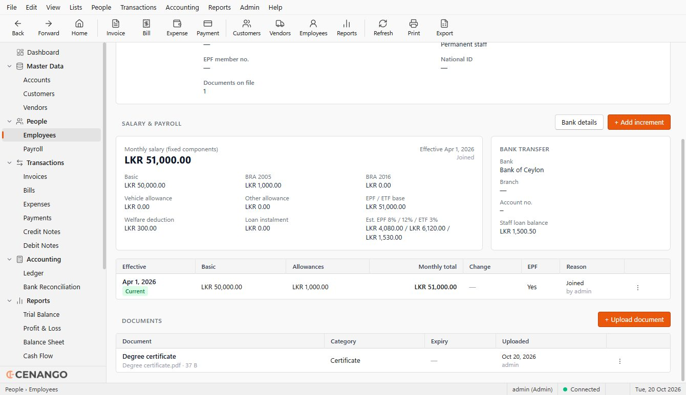
Salary, salary history, bank details and documents on the employee's page.
13Payroll
People → Payroll. One run per month.
Start payroll for the month. The app builds the salary sheet from each employee's salary: days worked, allowances, bonus, no-pay days, statutory deductions, loan instalments and other deductions. While the run is a draft, everything can be changed, and nothing has reached the ledger yet.
Check the totals: gross pay, deductions, net pay, employer contributions and the total cost to the company.
Post to ledger records salaries, deductions and employer contributions in the books.
Pay the salaries from the bank account.
Remit the statutory amounts to the authorities when they are due. The run shows what is due, remitted and still outstanding.
Documents: print the salary slips, the bank advice and the statutory forms. File slips to employee records saves each slip in that employee's documents.
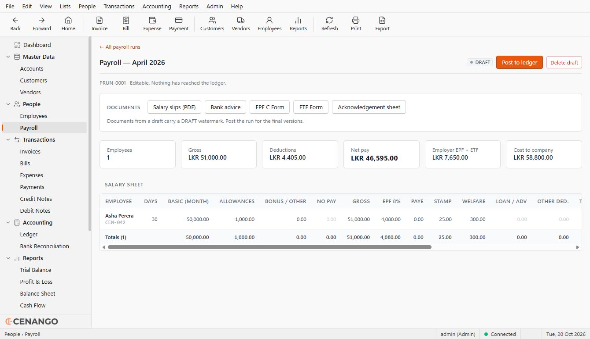
A draft payroll run with the salary sheet. Documents printed from a draft carry a DRAFT watermark.
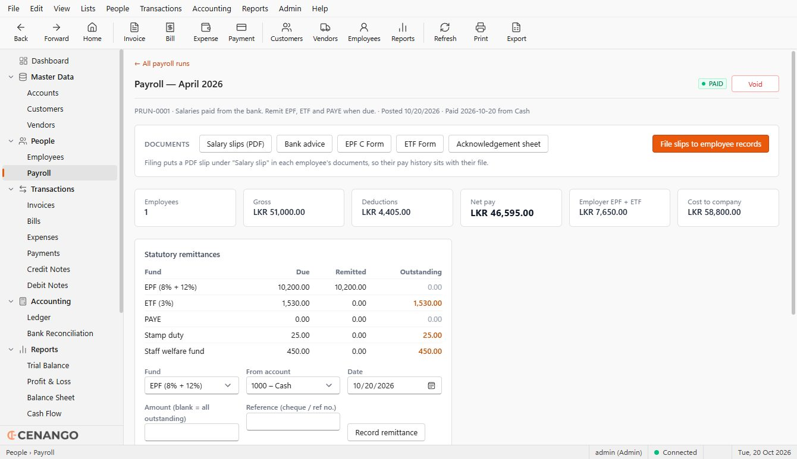
The run posted and paid, with the statutory payments still to make.
Void reverses every entry of a run, including any staff loan instalments, if it was posted by mistake.
Today, payroll follows Sri Lankan rules (EPF 8% + 12%, ETF 3%, PAYE, stamp duty). Payroll for other countries, where each company sets up its own deductions and contributions, is the next feature being built.
14Administration
Everything an administrator looks after: users, roles, the activity log, settings and backups.
Admin Centre
Administration → Admin Centre shows the state of the system on one page. Cards show the users, how many use two-factor sign-in, the last backup, the date the books are locked up to, how complete the company details are, and the tax codes. A warning in orange means something needs attention. Click a card to manage it, or use a quick action. The latest activity is listed beside them.
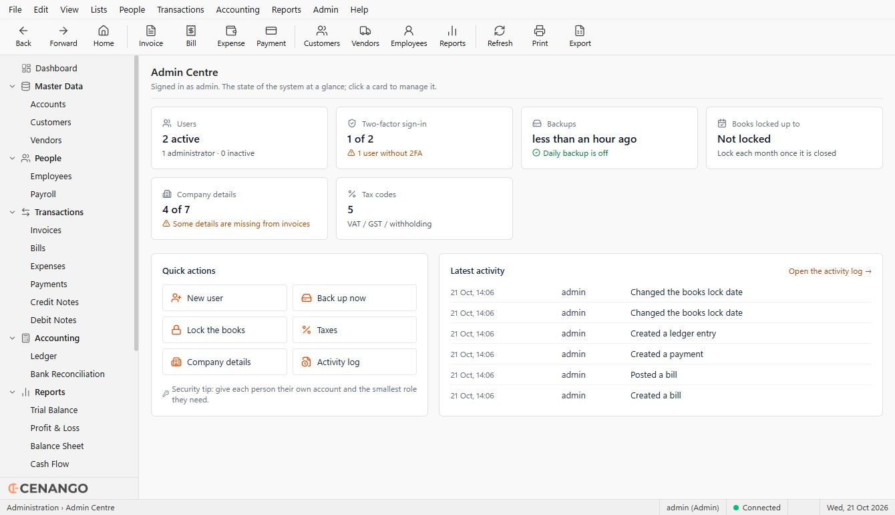
The Admin Centre: one user without 2FA and some company details missing.
Users
Administration → Users. Give each person their own account; never share a password. The list shows each user's role, status, whether two-factor sign-in is on, and their last sign-in. Your own row is marked YOU. Search by name or role.
+ New User: type the password twice; a bar shows how strong it is. Choosing a role shows what that role can open.
The ⋮ menu on each row offers Change role, Reset password, Turn off 2FA (for someone who lost their phone), and Deactivate or Activate. Each one explains what will happen before you confirm.
Deactivate people who leave: they can no longer sign in, and their history stays in the log.
You cannot deactivate yourself or take away your own Admin role, and the last administrator cannot be removed, so nobody gets locked out of the system.
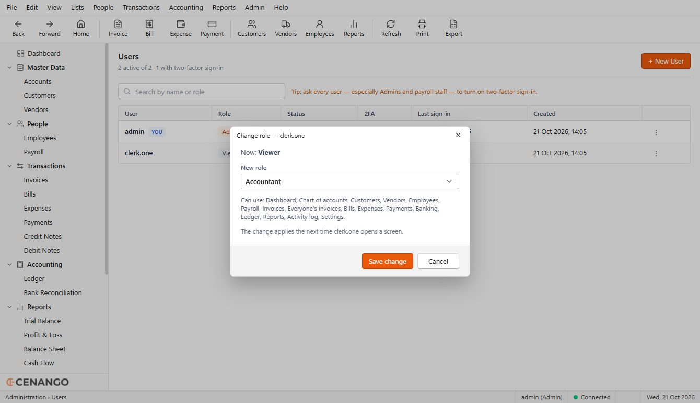
Changing a user's role: the dialog lists what the new role can use.
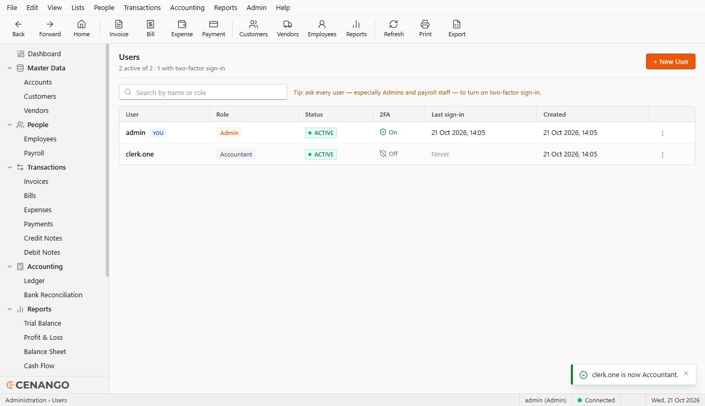
Users, with 2FA and last sign-in. A notice in the corner confirms each change.
Roles
Administration → Roles. A role decides which screens its users can open. Each role is shown as a card, with its permissions in plain words grouped as Sales, Purchases, Accounting, People & payroll and Administration, and the number of users who have it. The app comes with Admin (everything, built in and locked), Accountant and Viewer (dashboard, ledger and reports only).
+ New Role creates your own, for example a payroll clerk who can see employees and payroll only. Duplicate starts a new role from an existing one. In the editor each permission has a short explanation, and each group can be ticked all at once.
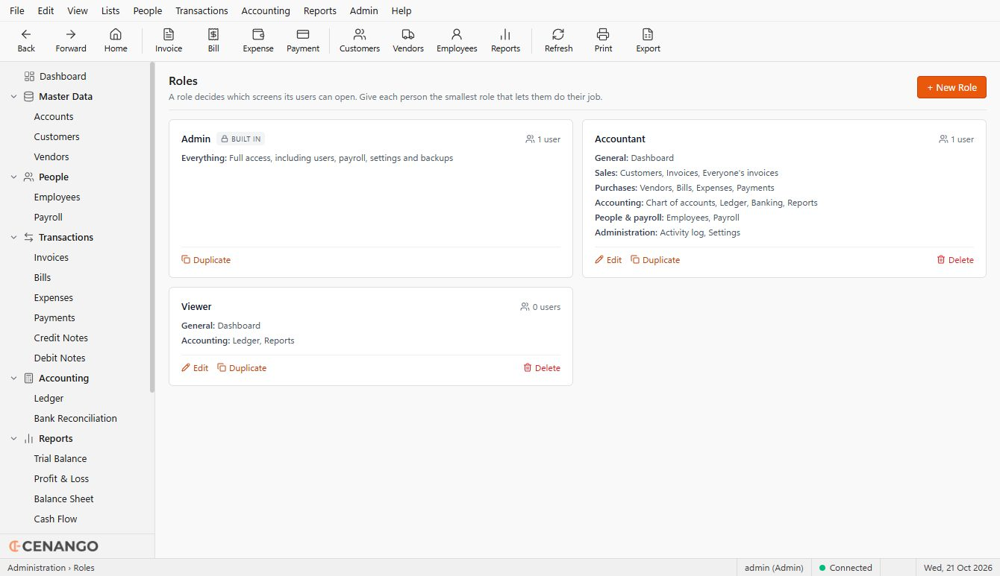
Roles in plain words, with the number of users in each.
Activity log
Administration → Activity Log records every sign-in and every change, with who made it and when. Narrow it by user, by kind (sign-ins, users & roles, settings & taxes, documents & records), by date, or by searching for a word. Export to Excel saves all matching rows. The log cannot be edited.
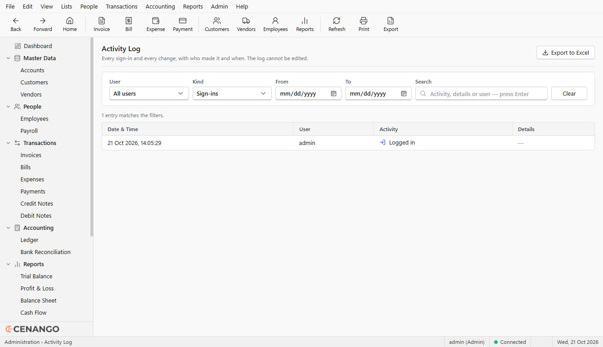
The activity log filtered to sign-ins.
Settings
Administration → Settings has a tab for each area, and each tab saves on its own.
Tab
What it holds
Company
Company name, address, phone, email, website, tax number and logo
Region & currency
Country, currency and how amounts are written in words, number and date format, financial year
Invoices & documents
Payment instructions and footer printed on invoices and statements; the invoice signatory
Closing
Lock the books (chapter 10)
Backup & restore
Backup password, back up now, daily backup and restore (chapter 15)
Links to Taxes and the Setup wizard sit under the tabs.
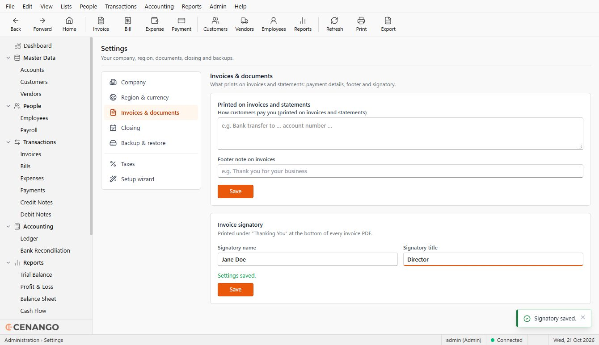
Settings → Invoices & documents. The notice in the corner confirms the save.
15Backup and restore
File → Backup and restore…, or Settings → Backup & restore. Keep copies of your data somewhere other than this PC, such as a USB drive, another PC or a cloud folder.
Backup password: set it once. Every backup is encrypted with it, so a lost USB drive does not expose your accounts. Keep the password safe: a backup cannot be opened without it.
Making a backup writes one file (cenango-accounting-….qbak). It holds the whole database plus every employee photo, document and payslip. The app checks each backup after writing it.
Daily backup: while the app is running it makes one backup a day into the folder you choose, and keeps the newest copies (14 by default).
Restore: choose a backup file and click Check backup, which confirms it is complete and readable. Then type RESTORE and click Restore at next start. The current data is kept in a pre-restore folder, just in case.
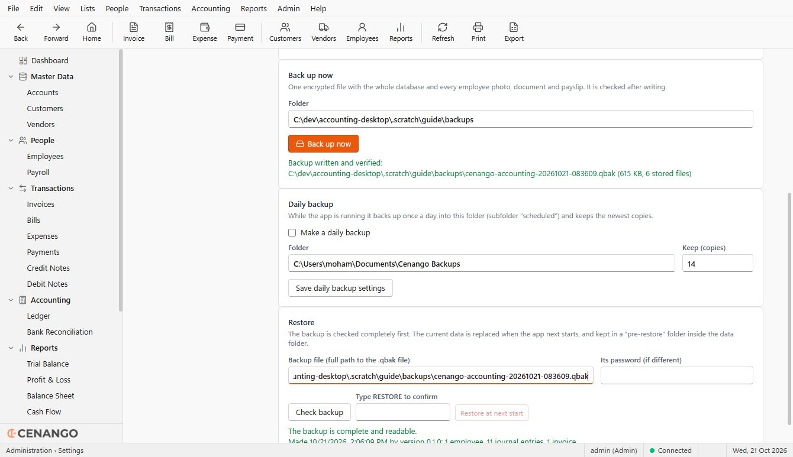
Settings → Backup & restore: a backup written and verified, the daily backup settings, and a backup checked before restoring.
16Quick reference
A typical month
When
What to do
Where
Every sale
Create the invoice, post it, print or email the PDF
Transactions → Invoices
Every vendor invoice
Enter it as a bill and post it
Transactions → Bills
Small costs paid at once
Record an expense
Transactions → Expenses
Money in or out
Record the payment against its invoice or bill
Transactions → Payments
Weekly
Check overdue customers and bills
Dashboard, AR / AP ageing
Month-end
Run payroll; post, pay and remit; file the slips
People → Payroll
Month-end
Reconcile each bank account to its statement
Accounting → Bank Reconciliation
Month-end
Review P&L, Balance Sheet and Cash Flow; run the tax return
Reports
Month-end
Revalue foreign-currency bank accounts
Master Data → Accounts
After closing
Lock the month
Settings → Closing
Always
Keep the daily backup on; copy backups off this PC
File → Backup and restore…
Several PCs in one office
The app can be shared on the office network (LAN mode, off by default). One PC keeps the data, and the others use the app through it in a browser, each person with their own user account. Only the main PC opens the database.
Not covered yet
Payroll for countries other than Sri Lanka. This is being built next.
Revaluing unpaid foreign-currency invoices and bills at month-end (foreign-currency bank accounts can already be revalued).
Currencies with three decimal places (for example the Kuwaiti or Bahraini dinar) as the company's own currency.
One company per installation: a second company needs its own data folder.